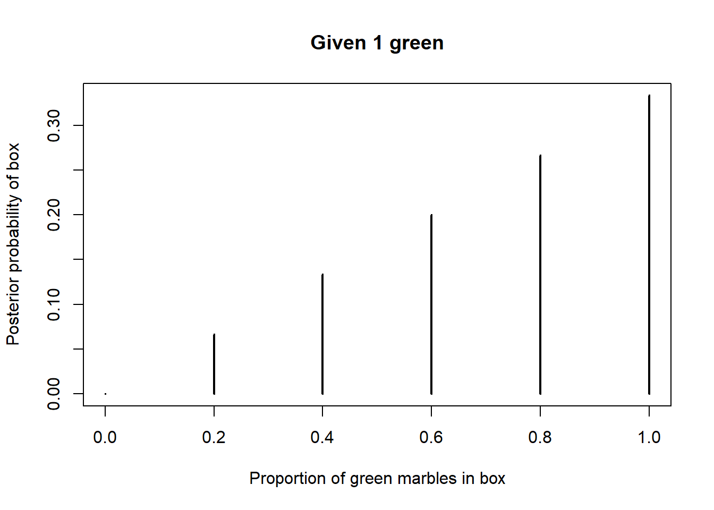
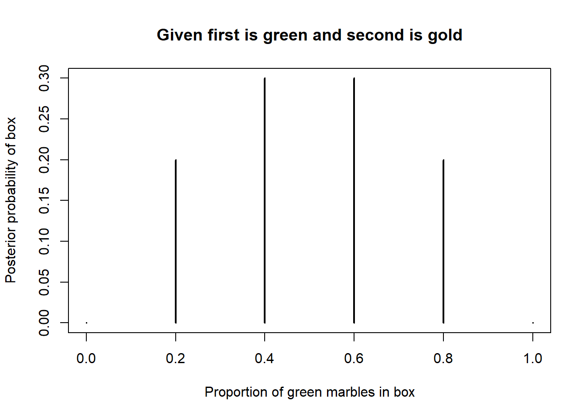

Chapter 2 Bayes’ Rule
The mechanism that underpins all of Bayesian statistical analysis is Bayes’ rule7, which describes how to update uncertainty in light of new information, evidence, or data.
Example 2.1 A recent survey of American adults asked: “Based on what you have heard or read, which of the following two statements best describes the scientific method?”
- 70% selected “The scientific method produces findings meant to be continually tested and updated over time” (“iterative”).
- 14% selected “The scientific method identifies unchanging core principles and truths” (unchanging).
- 16% were not sure which of the two statements was best.
How does the response to this question change based on education level? Suppose education level is classified as: high school or less (HS), some college but no Bachelor’s degree (college), Bachelor’s degree (Bachelor’s), or postgraduate degree (postgraduate). The education breakdown is
- Among those who agree with “iterative”: 31.3% HS, 27.6% college, 22.9% Bachelor’s, and 18.2% postgraduate.
- Among those who agree with “unchanging”: 38.6% HS, 31.4% college, 19.7% Bachelor’s, and 10.3% postgraduate.
- Among those “not sure”: 57.3% HS, 27.2% college, 9.7% Bachelor’s, and 5.8% postgraduate
- Use the information to construct an appropriate two-way table.
- Overall, what percentage of adults have a postgraduate degree? How is this related to the values 18.2%, 10.3%, and 5.8%?
- What percent of those with a postgraduate degree agree that the scientific method is “iterative”? How is this related to the values provided?
Show/hide solution
- Suppose there are 100000 hypothetical American adults. Of these 100000, \(100000\times 0.7 = 70000\) agree with the “iterative” statement. Of the 70000 who agree with the “iterative” statement, \(70000\times 0.182 = 12740\) also have a postgraduate degree. Continue in this way to complete the table below.
- Overall 15.11% of adults have a postgraduate degree (15110/100000 in the table). The overall percentage is a weighted average of the three percentages; 18.2% gets the most weight in the average because the “iterative” statement has the highest percentage of people that agree with it compared to “unchanging” and “not sure”. \[ 0.1511 = (0.70)(0.182) + (0.14)(0.103) + (0.16)(0.058) \]
- Of the 15110 who have a postgraduate degree 12740 agree with the “iterative” statement, and \(12740/15110 = 0.843\). 84.3% of those with a graduate degree agree that the scientific method is “iterative”. The value 0.843 is equal to the product of (1) 0.70, the overall proportion who agree with the “iterative” statement, and (2) 0.182, the proportion of those who agree with the “iterative” statement that have a postgraduate degree; divided by 0.1511, the overall proportion who have a postgraduate degree. \[ 0.843 = \frac{0.182 \times 0.70}{0.1511} \]
| HS | college | Bachelors | postgrad | total | |
|---|---|---|---|---|---|
| iterative | 21910 | 19320 | 16030 | 12740 | 70000 |
| unchanging | 5404 | 4396 | 2758 | 1442 | 14000 |
| not sure | 9168 | 4352 | 1552 | 928 | 16000 |
| total | 36482 | 28068 | 20340 | 15110 | 100000 |
Bayes’ rule for events specifies how a prior probability \(P(H)\) of event \(H\) is updated in response to the evidence \(E\) to obtain the posterior probability \(P(H|E)\). \[ P(H|E) = \frac{P(E|H)P(H)}{P(E)} \]
- Event \(H\) represents a particular hypothesis8 (or model or case)
- Event \(E\) represents observed evidence (or data or information)
- \(P(H)\) is the unconditional or prior probability of \(H\) (prior to observing \(E\))
- \(P(H|E)\) is the conditional or posterior probability of \(H\) after observing evidence \(E\).
- \(P(E|H)\) is the likelihood of evidence \(E\) given hypothesis (or model or case) \(H\)
Example 2.2 Continuing the previous example. Randomly select an American adult.
- Consider the conditional probability that a randomly selected American adult agrees that the scientific method is “iterative” given that they have a postgraduate degree. Identify the prior probability, hypothesis, evidence, likelihood, and posterior probability, and use Bayes’ rule to compute the posterior probability.
- Find the conditional probability that a randomly selected American adult with a postgraduate degree agrees that the scientific method is “unchanging”.
- Find the conditional probability that a randomly selected American adult with a postgraduate degree is not sure about which statement is best.
- How many times more likely is it for an American adult to have a postgraduate degree and agree with the “iterative” statement than to have a postgraduate degree and agree with the “unchanging” statement?
- How many times more likely is it for an American adult with a postgraduate degree to agree with the “iterative” statement than to agree with the “unchanging” statement?
- What do you notice about the answers to the two previous parts?
Show/hide solution
- This is essentially the same question as the last part of the previous problem, just with different terminology.
- The hypothesis is \(H_1\), the event that the randomly selected adult agrees with the “iterative” statement.
- The prior probability is \(P(H_1) = 0.70\), the overall or unconditional probability that a randomly selected American adult agrees with the “iterative” statement.
- The given “evidence” \(E\) is the event that the randomly selected adult has a postgraduate degree. The marginal probability of the evidence is \(P(E)=0.1511\), which can be obtained by the law of total probability as in the previous problem.
- The likelihood is \(P(E | H_1) = 0.182\), the conditional probability that the adult has a postgraduate degree (the evidence) given that the adult agrees with the “iterative” statement (the hypothesis).
- The posterior probability is \(P(H_1 |E)=0.843\), the conditional probability that a randomly selected American adult agrees that the scientific method is “iterative” given that they have a postgraduate degree. By Bayes rule \[ P(H_1 | E) = \frac{P(E | H_1) P(H_1)}{P(E)} = \frac{0.182 \times 0.70}{0.1511} = 0.843 \]
- Let \(H_2\) be the event that the randomly selected adult agrees with the “unchanging” statement; the prior probability is \(P(H_2) = 0.14\). The evidence \(E\) is still “postgraduate degree” but now the likelihood of this evidence is \(P(E | H_2) = 0.103\) under the “unchanging” hypothesis. The conditional probability that a randomly selected adult with a postgraduate degree agrees that the scientific method is “unchanging” is \[ P(H_2 | E) = \frac{P(E | H_2) P(H_2)}{P(E)} = \frac{0.103 \times 0.14}{0.1511} = 0.095 \]
- Let \(H_3\) be the event that the randomly selected adult is “not sure”; the prior probability is \(P(H_3) = 0.16\). The evidence \(E\) is still “postgraduate degree” but now the likelihood of this evidence is \(P(E | H_3) = 0.058\) under the “not sure” hypothesis. The conditional probability that a randomly selected adult with a postgraduate degree is “not sure” is \[ P(H_3 | E) = \frac{P(E | H_3) P(H_3)}{P(E)} = \frac{0.058 \times 0.16}{0.1511} = 0.061 \]
- The probability that an American adult has a postgraduate degree and agrees with the “iterative” statement is \(P(E \cap H_1) = P(E|H_1)P(H_1) = 0.182\times 0.70 = 0.1274\). The probability that an American adult has a postgraduate degree and agrees with the “unchanging” statement is \(P(E \cap H_2) = P(E|H_2)P(H_2) = 0.103\times 0.14 = 0.01442\). Since \[ \frac{P(E \cap H_1)}{P(E \cap H_2)} = \frac{0.182\times 0.70}{0.103\times 0.14} = \frac{0.1274}{0.01442} = 8.835 \] an American adult is 8.835 times more likely to have a postgraduate degree and agree with the “iterative” statement than to have a postgraduate degree and agree with the “unchanging” statement.
- The conditional probability that an American adult with a postgraduate degree agrees with the “iterative” statement is \(P(H_1 | E) = P(E|H_1)P(H_1)/P(E) = 0.182\times 0.70/0.1511 = 0.843\). The conditional probability that an American adult with a postgraduate degree agrees with the “unchanging” statement is \(P(H_2|E) = P(E|H_2)P(H_2)/P(E) = 0.103\times 0.14/0.1511 = 0.09543\). Since \[ \frac{P(H_1 | E)}{P(H_2 | E)} = \frac{0.182\times 0.70/0.1511}{0.103\times 0.14/0.1511} = \frac{0.84315}{0.09543} = 8.835 \] An American adult with a postgraduate degree is 8.835 times more likely to agree with the “iterative” statement than to agree with the “unchanging” statement.
- The ratios are the same! Conditioning on having a postgraduate degree just “slices” out the Americans who have a postgraduate degree. The ratios are determined by the overall probabilities for Americans. The conditional probabilities, given postgraduate, simply rescale the probabilities for Americans who have a postgraduate degree to add up to 1 (by dividing by 0.1511.)
Bayes rule is often used when there are multiple hypotheses or cases. Suppose \(H_1,\ldots, H_k\) is a series of distinct hypotheses which together account for all possibilities9, and \(E\) is any event (evidence). Then Bayes’ rule implies that the posterior probability of any particular hypothesis \(H_j\) satisfies \[\begin{align*} P(H_j |E) & = \frac{P(E|H_j)P(H_j)}{P(E)} \end{align*}\]
The marginal probability of the evidence, \(P(E)\), in the denominator can be calculated using the law of total probability \[ P(E) = \sum_{i=1}^k P(E|H_i) P(H_i) \] The law of total probability says that we can interpret the unconditional probability \(P(E)\) as a probability-weighted average of the case-by-case conditional probabilities \(P(E|H_i)\) where the weights \(P(H_i)\) represent the probability of encountering each case.
Combining Bayes’ rule with the law of total probability, \[\begin{align*} P(H_j |E) & = \frac{P(E|H_j)P(H_j)}{P(E)}\\ & = \frac{P(E|H_j)P(H_j)}{\sum_{i=1}^k P(E|H_i) P(H_i)}\\ & \\ P(H_j |E) & \propto P(E|H_j)P(H_j) \end{align*}\]
The symbol \(\propto\) is read “is proportional to”. The relative ratios of the posterior probabilities of different hypotheses are determined by the product of the prior probabilities and the likelihoods, \(P(E|H_j)P(H_j)\). The marginal probability of the evidence, \(P(E)\), in the denominator simply normalizes the numerators to ensure that the updated probabilities sum to 1 over all the distinct hypotheses.
In short, Bayes’ rule says10 \[ \textbf{posterior} \propto \textbf{likelihood} \times \textbf{prior} \]
In the previous examples, the prior probabilities for an American adult’s perception of the scientific method are 0.70 for “iterative”, 0.14 for “unchanging”, and 0.16 for “not sure”. After observing that the American has a postgraduate degree, the posterior probabilities for an American adult’s perception of the scientific method become 0.8432 for “iterative”, 0.0954 for “unchanging”, and 0.0614 for “not sure”. The following organizes the calculations in a Bayes’ table which illustrates “posterior is proportional to likelihood times prior”.
| hypothesis | prior | likelihood | product | posterior |
|---|---|---|---|---|
| iterative | 0.70 | 0.182 | 0.1274 | 0.8432 |
| unchanging | 0.14 | 0.103 | 0.0144 | 0.0954 |
| not sure | 0.16 | 0.058 | 0.0093 | 0.0614 |
| sum | 1.00 | NA | 0.1511 | 1.0000 |
The likelihood column depends on the evidence, in this case, observing that the American has a postgraduate degree. This column contains the probability of the same event, \(E\) = “the American has a postgraduate degree”, under each of the distinct hypotheses:
- \(P(E |H_1) = 0.182\), given the American agrees with the “iterative” statement
- \(P(E |H_2) = 0.103\), given the American agrees with the “unchanging” statement
- \(P(E |H_3) = 0.058\), given the American is “not sure”
Since each of these probabilities is computed under a different case, these values do not need to add up to anything in particular. The sum of the likelihoods is meaningless, which is why we have listed a sum of “NA” for the likelihood column.
The “product” column contains the product of the values in the prior and likelihood columns. The product of prior and likelihood for “iterative” (0.1274) is 8.835 (0.1274/0.0144) times higher than the product of prior and likelihood for “unchanging” (0.0144). Therefore, Bayes rule implies that the conditional probability that an American with a postgraduate degree agrees with “iterative” should be 8.835 times higher than the conditional probability that an American with a postgraduate degree agrees with “unchanging”. Similarly, the conditional probability that an American with a postgraduate degree agrees with “iterative” should be \(0.1274 / 0.0093 = 13.73\) times higher than the conditional probability that an American with a postgraduate degree is “not sure”, and the conditional probability that an American with a postgraduate degree agrees with “unchanging” should be \(0.0144 / 0.0093 = 1.55\) times higher than the conditional probability that an American with a postgraduate degree is “not sure”. The last column just translates these relative relationships into probabilities that sum to 1.
The sum of the “product” column is \(P(E)\), the marginal probability of the evidence. The sum of the product column represents the result of the law of total probability calculation. However, for the purposes of determining the posterior probabilities, it isn’t really important what \(P(E)\) is. Rather, it is the ratio of the values in the “product” column that determine the posterior probabilities. \(P(E)\) is whatever it needs to be to ensure that the posterior probabilities sum to 1 while maintaining the proper ratios.
The process of conditioning can be thought of as “slicing and renormalizing”.
- Extract the “slice” corresponding to the event being conditioned on (and discard the rest). For example, a slice might correspond to a particular row or column of a two-way table.
- “Renormalize” the values in the slice so that corresponding probabilities add up to 1.
We will see that the “slicing and renormalizing” interpretation also applies when dealing with conditional distributions of random variables, and corresponding plots. Slicing determines the shape; renormalizing determines the scale. Slicing determines relative probabilities; renormalizing just makes sure they “add up” to 1 while maintaining the proper ratios.
Example 2.3 Now suppose we want to compute the posterior probabilities for an American adult’s perception of the scientific method given that the randomly selected American adult has a Bachelor’s degree (instead of a postgraduate degree).
- Before computing, make an educated guess for the posterior probabilities. In particular, will the changes from prior to posterior be more or less extreme given the American has a Bachelor’s degree than when given the American has a postgraduate degree? Why?
- Construct a Bayes table and compute the posterior probabilities. Compare to the posterior probabilities given postgraduate degree from the previous examples.
Like the scientific method, Bayesian analysis is often an iterative process.
Example 2.4 Suppose that you are presented with six boxes, labeled 0, 1, 2, \(\ldots\), 5, each containing five marbles. Box 0 contains 0 green and 5 gold marbles, box 1 contains 1 green and 4 gold, and so on with box \(i\) containing \(i\) green and \(5-i\) gold. One of the boxes is chosen uniformly at random (perhaps by rolling a fair six-sided die), and then you will randomly select marbles from that box, without replacement. Based on the colors of the marbles selected, you will update the probabilities of which box had been chosen.
- Suppose that a single marble is selected and it is green. Which box do you think is the most likely to have been chosen? Make a guess for the posterior probabilities for each box. Then construct a Bayes table to compute the posterior probabilities.
- Now suppose a second marble is selected from the same box, without replacement, and its color is gold. Which box do you think is the most likely to have been chosen given these two marbles? Make a guess for the posterior probabilities for each box. Then construct a Bayes table to compute the posterior probabilities, using the posterior probabilities after the selection of the green marble as the new prior probabilities before seeing the gold marble.
- Now construct a Bayes table corresponding to the original prior probabilities (1/6 each) and the evidence that the first ball selected was green and the second was gold. How do the posterior probabilities compare to the previous part?
- In the previous part, the first ball selected was green and the second was gold. Suppose you only knew that in a sample of two marbles, 1 was green and 1 was gold. That is, you didn’t know which was first or second. How would the previous part change? Should knowing the order matter? Does it?
Since the prior probability is the same for each box, the posterior probability will be greatest for the box for which the likelihood of selecting a green marble (the evidence) is greatest, i.e., box 5 which has a likelihood of drawing a green marble of 1. The likelihood of drawing a green marble is 0 for box 0, so box 0 will have a posterior probability of 0. The Bayes table is below, along with a plot of the posterior probabilities. The likelihood column provides the probability of drawing a green marble from each of the boxes, which is \(i/5\) for box \(i\). Since the prior is “flat” the posterior probabilities are proportional to the likelihoods.
| Green | prior | likelihood | product | posterior |
|---|---|---|---|---|
| 0 | 0.1667 | 0.0 | 0.0000 | 0.0000 |
| 1 | 0.1667 | 0.2 | 0.0333 | 0.0667 |
| 2 | 0.1667 | 0.4 | 0.0667 | 0.1333 |
| 3 | 0.1667 | 0.6 | 0.1000 | 0.2000 |
| 4 | 0.1667 | 0.8 | 0.1333 | 0.2667 |
| 5 | 0.1667 | 1.0 | 0.1667 | 0.3333 |
| sum | 1.0000 | NA | 0.5000 | 1.0000 |

The posterior probabilities above quantify our uncertainty about the box after observing a single randomly selected marble is green. These probabilities serve as the prior probabilities before drawing any additional marbles. After drawing a green marble without replacement, each box has 4 marbles and 1 less green marble than before, and the likelihood of observing a second marble which is gold is computed for each of the 4-marble boxes. For example, after drawing a green marble, box 2 now contains 1 green marble and 3 gold marbles, so the likelihood of drawing a gold marble from box 2 is 3/4. (The likelihood for box 0 is technically undefined because the probability of drawing a green marble first from box 0 is 0. But since the prior probability for box 0 is 0, the posterior probability for box 0 will be 0 regardless of the likelihood.) The Bayes table is below. Since we have observed green and gold in equal proportion in our sample, the posterior probabilities are highest for the boxes with closest to equal proportions of green and gold (box 2 and box 3).
| Green | prior | likelihood | product | posterior |
|---|---|---|---|---|
| 0 | 0.0000 | 1.00 | 0.0000 | 0.0 |
| 1 | 0.0667 | 1.00 | 0.0667 | 0.2 |
| 2 | 0.1333 | 0.75 | 0.1000 | 0.3 |
| 3 | 0.2000 | 0.50 | 0.1000 | 0.3 |
| 4 | 0.2667 | 0.25 | 0.0667 | 0.2 |
| 5 | 0.3333 | 0.00 | 0.0000 | 0.0 |
| sum | 1.0000 | NA | 0.3333 | 1.0 |

Above we updated the posterior probabilities after the first marble and again after selecting the second. What if we start with equally likely prior probabilities and only update the posterior probabilities after selecting both marbles? The likelihood now represents the probability of drawing a green and then a gold marble, without replacement, from each of the boxes. For example, for box 2, the probability of drawing a green marble first is 2/5 and the conditional probability of then drawing a gold marble is 3/4, so the probability of drawing green and then gold is (2/5)(3/4) = 0.3.
The Bayes table is below. Notice that the posterior probabilities are the same as in the previous part! It doesn’t matter if we sequentially update our probabilities after each draw as in the previous part, or only once after the entire sample is drawn. The posterior probabilities are the same either way.
| Green | prior | likelihood | product | posterior |
|---|---|---|---|---|
| 0 | 0.1667 | 0.0 | 0.0000 | 0.0 |
| 1 | 0.1667 | 0.2 | 0.0333 | 0.2 |
| 2 | 0.1667 | 0.3 | 0.0500 | 0.3 |
| 3 | 0.1667 | 0.3 | 0.0500 | 0.3 |
| 4 | 0.1667 | 0.2 | 0.0333 | 0.2 |
| 5 | 0.1667 | 0.0 | 0.0000 | 0.0 |
| sum | 1.0000 | NA | 0.1667 | 1.0 |

What if we know the sample contains 1 green and 1 gold marble, but we don’t know which was drawn first? It seems that knowing the order shouldn’t matter in terms of our posterior probabilities. Technically, the likelihood does change since there are two ways to get a sample with 1 green and 1 gold: green followed by gold or gold followed by green. Therefore, each likelihood will be two times larger than in the previous part. For example, for box 2, the probability of green then gold is (2/5)(3/4) and the probability of gold then green is (3/5)(2/4), so the probability of 1 green and 1 gold is (2/5)(3/4) + (3/4)(2/5) = 2(0.3). However, the ratios of the likelihoods have not changed; since each likelihood is twice as large as it was in the previous part, the likelihood from this part is proportional to the likelihood from the previous part. Therefore, since the prior probabilities are the same as in the previous part and the likelihoods are proportionally the same as in the previous part, the posterior probabilities will also be the same as in the previous part.
| Green | prior | likelihood | product | posterior |
|---|---|---|---|---|
| 0 | 0.1667 | 0.0 | 0.0000 | 0.0 |
| 1 | 0.1667 | 0.4 | 0.0667 | 0.2 |
| 2 | 0.1667 | 0.6 | 0.1000 | 0.3 |
| 3 | 0.1667 | 0.6 | 0.1000 | 0.3 |
| 4 | 0.1667 | 0.4 | 0.0667 | 0.2 |
| 5 | 0.1667 | 0.0 | 0.0000 | 0.0 |
| sum | 1.0000 | NA | 0.3333 | 1.0 |

Bayesian analyses are often performed sequentially. Posterior probabilities are updated after observing some information or data. These probabilities can then be used as prior probabilities before observing new data. Posterior probabilities can be sequentially updated as new data becomes available, with the posterior probabilities after the previous stage serving as the prior probabilities for the next stage. The final posterior probabilities only depend upon the cumulative data. It doesn’t matter if we sequentially update the posterior after each new piece of data or only once after all the data is available; the final posterior probabilities will be the same either way. Also, the final posterior probabilities are not impacted by the order in which the data are observed.
This section only covers Bayes’ rule for events. We’ll see Bayes’ rule for distributions of random variables later. But the ideas are analogous.↩︎
We’re using “hypothesis” in the sense of a general scientific hypothesis, not necessarily a statistical null or alternative hypothesis.↩︎
More formally, \(H_1,\ldots, H_k\) is a partition which satisfies \(P\left(\cup_{i=1}^k H_i\right)=1\) and \(H_1, \ldots, H_k\) are disjoint — \(H_i\cap H_j=\emptyset , i\neq j\).↩︎
“Posterior is proportional to likelihood times prior” summarizes the whole course in a single sentence.↩︎